Introduction
This writeup documents the design, implementation, and testing of a network-monitoring environment built entirely on one host. The goal was a functional lab of six isolated network segments with all traffic routed through a single Suricata sensor before it reaches a target service, and five distinct attacks detected using per-subnet Suricata rules.
Rather than deploying a single service, the target namespace hosts four — HTTP, FTP, SSH, and LDAP — so each source namespace can demonstrate a meaningfully different class of attack and a correspondingly different detection approach. That spread covers application-layer content inspection (SQL injection, anonymous FTP), connection-behaviour analysis (SSH brute force), and LDAP-specific keyword and response-code matching (honeypot enumeration and password spraying).
Every section below follows the same shape: environment setup, Suricata rule development with its rationale, attack execution, and the confirmed alert. Section 4 goes a step further and shows Suricata running inline as an IPS via Linux NFQUEUE, actively dropping traffic rather than only alerting on it.
Section 1 · Network Design & Setup
1.1 Environment
The base is a clean Ubuntu Server VM (a desktop environment was added for convenience but is not required), with the latest version of Suricata installed.
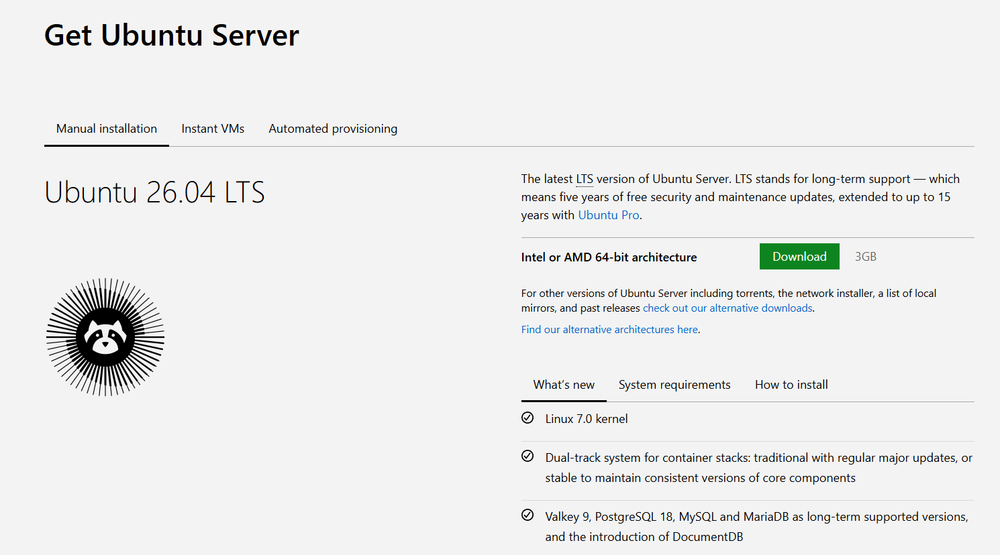
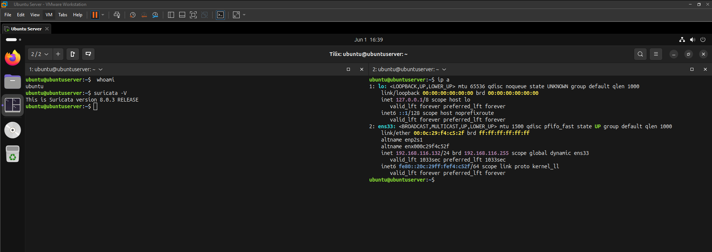
1.2 Architecture overview
The lab is seven Linux network namespaces: five source segments, one
IDS segment, and one target. Each source namespace connects to
ids through a dedicated veth pair. The ids namespace holds one
interface per source subnet plus a separate interface toward target, which
makes it the sole forwarding path every packet must traverse.
| Namespace | Role | Subnet / address |
|---|---|---|
ns1 | Source — SQL injection | 10.1.1.0/24 (host .2) |
ns2 | Source — anonymous FTP | 10.2.2.0/24 (host .2) |
ns3 | Source — SSH brute force | 10.3.3.0/24 (host .2) |
ns4 | Source — LDAP honeypot enum | 10.4.4.0/24 (host .2) |
ns5 | Source — LDAP password spray | 10.5.5.0/24 (host .2) |
ids | Inline sensor / router | .1 on every subnet above + 192.168.100.1 |
target | Victim services (HTTP/FTP/SSH/LDAP) | 192.168.100.2/24 |
1.3 Why Linux namespaces?
Linux network namespaces give complete kernel-level isolation: each namespace has its own interfaces, routing table, firewall rules, and ARP table, with zero shared state between them. Unlike virtual machines there is no hypervisor overhead — and these are the same primitive that Docker and Kubernetes use internally. That makes them ideal for simulating a multi-segment network entirely on one machine.
1.4 Step-by-step creation
1.4.1 Create all seven namespaces
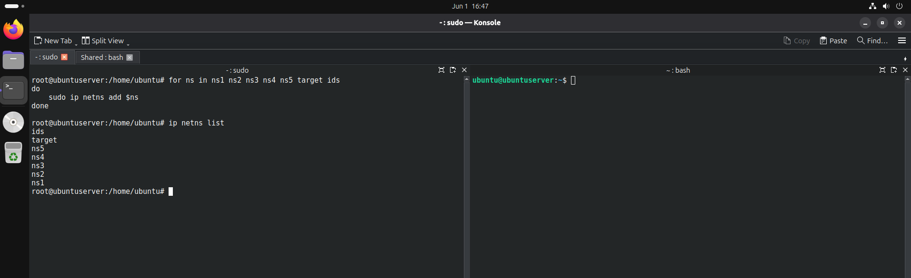
ip netns list.
ip netns add registers a new, isolated network namespace with the kernel. At
this point each namespace contains only an inactive loopback interface and has no external
connectivity.
1.4.2 Create the veth pairs in the root namespace
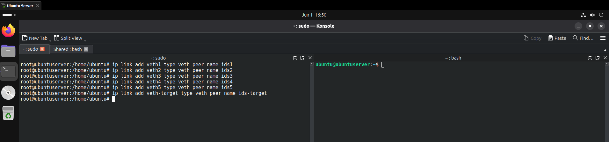
A veth (virtual Ethernet) pair behaves like a virtual patch cable — any packet sent into
one end immediately appears on the other. Six pairs are created: one for each
source-to-IDS link (veth1/ids1 through veth5/ids5) and one for
the IDS-to-target link (veth-target/ids-target). All six are created in the
root namespace first, then handed out.
1.4.3 Move each interface into its namespace
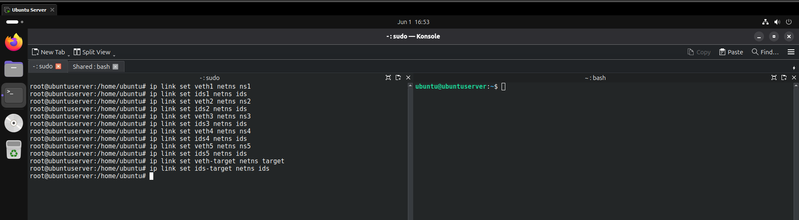
ip link set <iface> netns <ns>.
The move is permanent: afterwards veth1 is only visible inside ns1,
ids1 only inside ids, and so on. The ids namespace
ends up holding six interfaces — one facing each source subnet and one facing the target.
1.4.4 Assign IP addresses
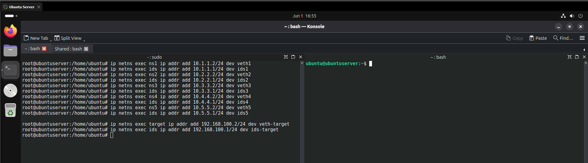
Giving every source its own subnet is deliberate: it lets Suricata tell exactly which
source a packet came from by inspecting the source IP, which is what makes per-subnet rule
sets possible later. The target segment uses 192.168.100.0/24 to keep it
clearly distinct from source traffic.
1.4.5 Bring up the source-side interfaces
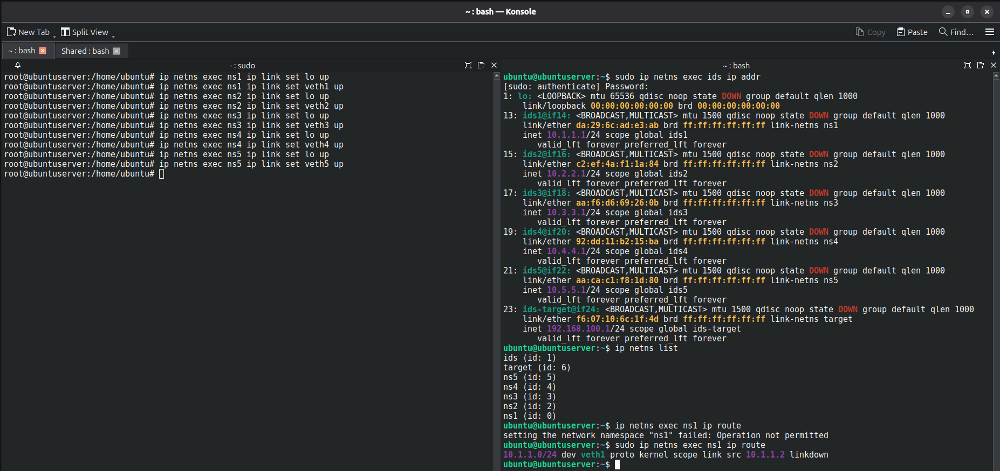
ids side shows its IPs assigned but still DOWN — its interfaces
haven't been brought up yet.
Interfaces are DOWN by default after being moved into a namespace, so both the
loopback (lo) and the veth interface must be brought up explicitly.
1.4.6 Bring up the IDS-side interfaces
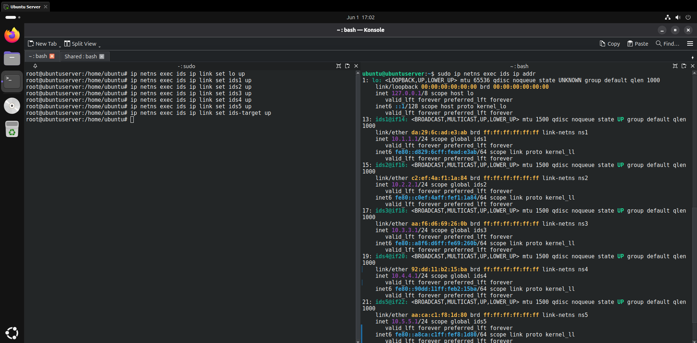
ids1/ids2 transition to
BROADCAST,MULTICAST,UP,LOWER_UP — LOWER_UP confirms the veth
link is established end to end.1.4.7 Bring up the target interface
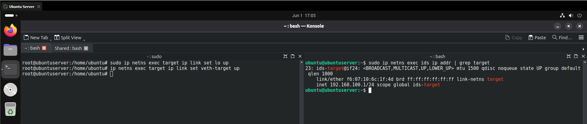
ids-target is UP,LOWER_UP with
192.168.100.1/24, and link-netns target confirms the peer sits
in the target namespace.1.4.8 Add default routes
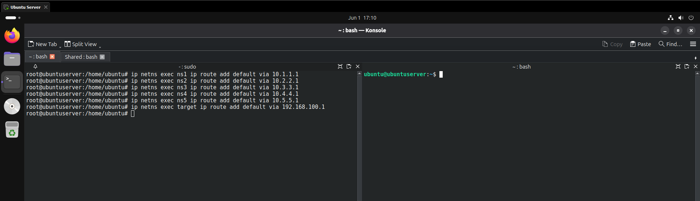
ids.
Each source namespace needs a default gateway pointing at ids so that all
traffic — including packets for 192.168.100.2 — is forwarded through
ids rather than dropped. The target namespace needs a default route via
192.168.100.1 so response packets can get back. Without that return route,
connections would be one-way only.
1.4.9 Enable IP forwarding on the IDS and verify
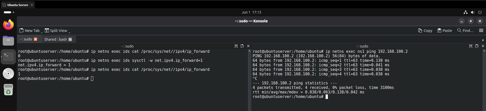
ttl=63 and 0% loss end to end.
By default Linux drops packets that arrive on one interface but are destined for a
different network. Setting net.ipv4.ip_forward=1 turns the ids
namespace into a router, letting packets arriving on ids1–ids5 be
forwarded out ids-target toward target. This is the step that
completes the forwarding path.
Attl=63(decremented from 64) confirms the packet was forwarded through one hop — theidsnamespace — exactly as intended. 0% packet loss confirms the full bidirectional pathns1 → ids → target → ids → ns1works.
1.5 Network diagram
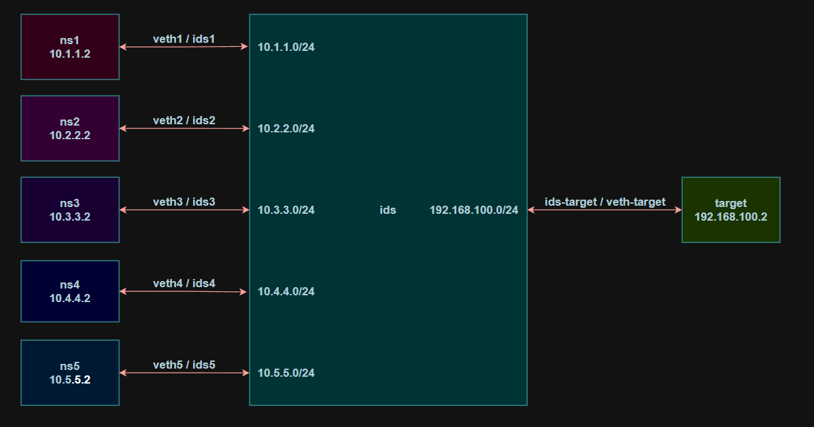
ids — there is no direct
path to target.This inline placement is exactly what lets Suricata both detect and, in the next phase, block traffic.
Section 2 · SQL Injection (ns1)
2.1 Setting up the vulnerable environment
A deliberately vulnerable PHP web application was deployed inside the target namespace
(192.168.100.2) to simulate a login service. It authenticates against an
SQLite database and concatenates user input straight into the query, so it is vulnerable to
SQL injection. It is the target for traffic from ns1.
2.1.1 Enter the target namespace and verify identity
sudo ip netns exec target bash
ip a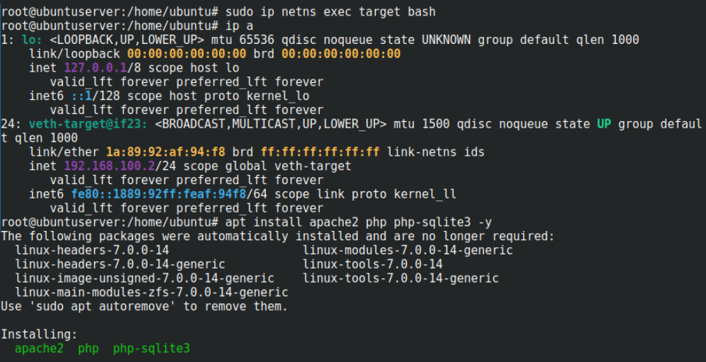
veth-target holds 192.168.100.2/24 and is up.2.1.2 Create the vulnerable PHP application
The page takes user and pass from HTTP GET parameters and inserts
them directly into the SQL query — no parameterisation, so it is injectable.
<?php
$db = new SQLite3('users.db');
$username = $_GET['user'];
$password = $_GET['pass'];
$query = "SELECT * FROM users WHERE username='$username' AND password='$password'";
echo "<b>Executing Query:</b><br>";
echo htmlspecialchars($query);
echo "<hr>";
$result = $db->query($query);
if ($result->fetchArray()) {
echo "Login Successful";
} else {
echo "Login Failed";
}
?>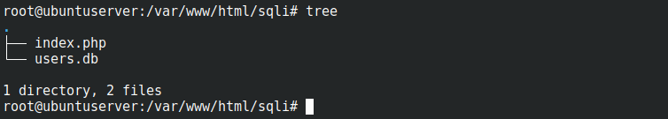
2.1.3 Create and populate the SQLite database
sqlite3 users.db
CREATE TABLE users(username TEXT, password TEXT);
INSERT INTO users VALUES('admin','admin123');
INSERT INTO users VALUES('satej','satej123');
INSERT INTO users VALUES('rudra','rudra123');
.quit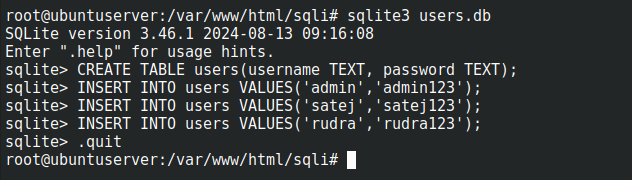
2.1.4 Start the PHP built-in web server
php -S 192.168.100.2:80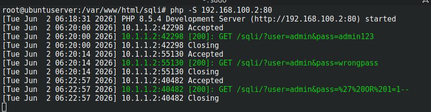
192.168.100.2:80.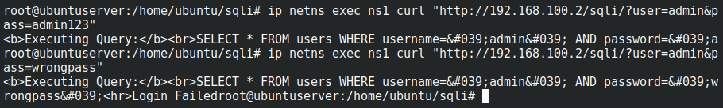
2.2 Suricata rule development
A custom rule was added to /etc/suricata/rules/local.rules to inspect HTTP
traffic bound for the app and alert on a common injection pattern.
alert http 10.1.1.0/24 any -> 192.168.100.2 80 (
msg:"NS1 SQL Injection";
content:"OR";
sid:100001;
rev:1;
)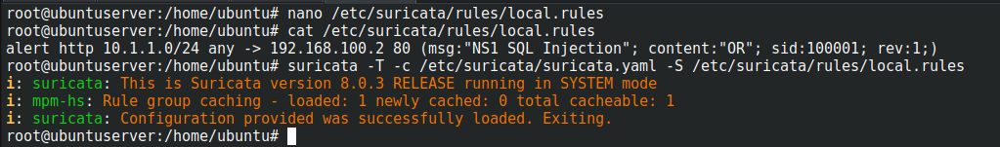
sid:100001 rule, scoped to the ns1 subnet.
The rule watches HTTP from 10.1.1.0/24 to 192.168.100.2:80 and
fires if the string OR appears in the inspected payload. It was then validated
before deployment:
sudo suricata -T -c /etc/suricata/suricata.yaml -S /etc/suricata/rules/local.rules
This signature is intentionally simplified for the demo. Matching only the bare string
OR would be noisy in production because the keyword appears in plenty of
legitimate requests. A robust signature would inspect SQL metacharacters, URL-encoded
payloads, and contextual patterns instead.
2.3 IDS deployment and monitoring
Suricata was launched inside the ids namespace on ids1, the
interface that receives all ns1 traffic.
sudo ip netns exec ids suricata -i ids1 -S /etc/suricata/rules/local.rules -v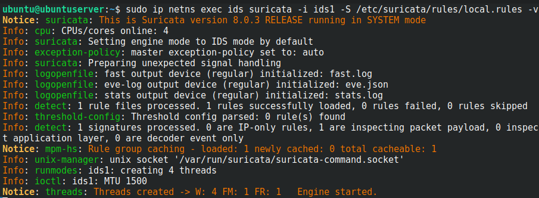
ids1.2.4 Attack execution and detection
2.4.1 Executing the attack
curl "http://192.168.100.2/sqli/?user=admin&pass=%27%20OR%201=1--"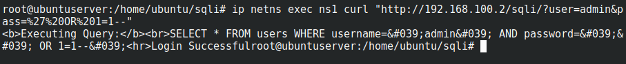
%27%20OR%201=1-- decodes to ' OR 1=1--.
The injected OR 1=1 makes the WHERE clause always true, so the app
returns Login Successful with no valid password — authentication bypassed.
2.4.2 Alert generation
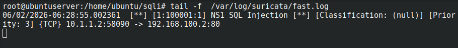
fast.log.
The entry shows source 10.1.1.2 (ns1) → 192.168.100.2:80, message
NS1 SQL Injection, rule 100001. The attack produced its intended
effect (bypass) and tripped the IDS — detection confirmed.
Section 3 · Anonymous FTP Access (ns2)
3.1 Setting up the FTP environment
3.1.1 Install and configure vsftpd
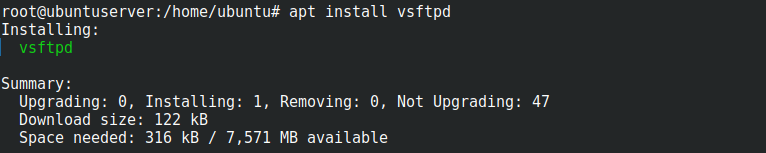
The config (/etc/vsftpd.conf) was set to allow anonymous access:
listen=YES
listen_ipv6=NO
anonymous_enable=YES
local_enable=YES
write_enable=YES
anon_root=/srv/ftp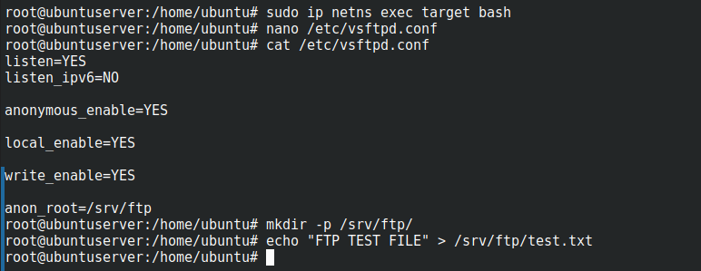
/srv/ftp presented to anonymous users.3.1.2 Start the FTP service
/usr/sbin/vsftpd /etc/vsftpd.conf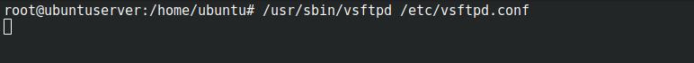
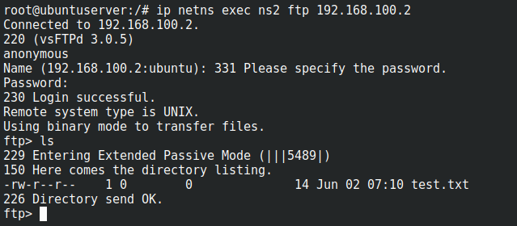
3.2 Suricata rule development
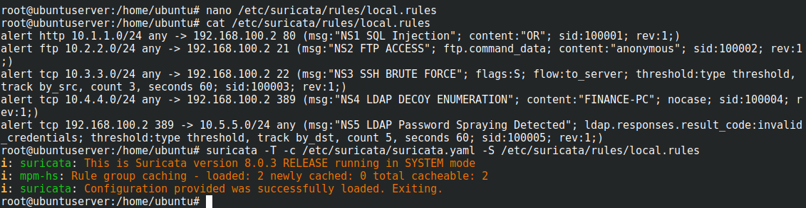
sid:100002 FTP rule.alert ftp 10.2.2.0/24 any -> 192.168.100.2 21 (
msg:"NS2 FTP ACCESS";
ftp.command_data;
content:"anonymous";
sid:100002;
rev:1;
)
The rule inspects FTP control traffic from 10.2.2.0/24 and fires whenever the
username anonymous appears during authentication.
3.3 Start Suricata on ids2
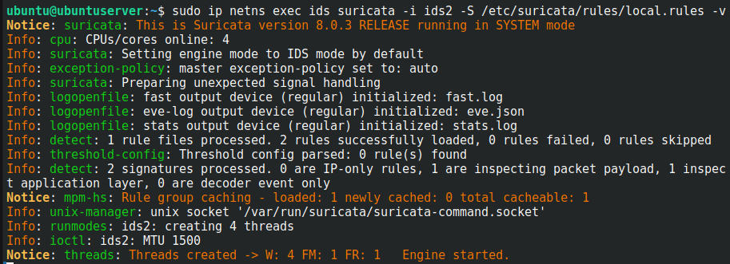
3.4 Detecting the access
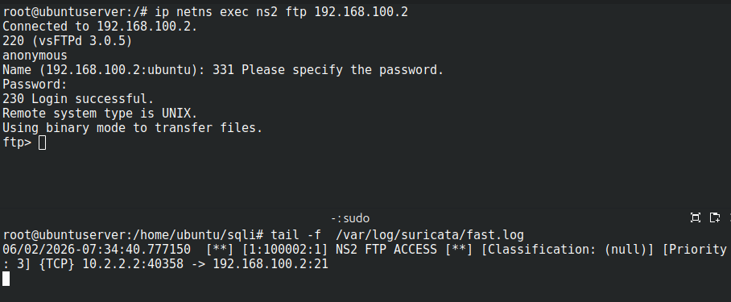
The transmitted username matched content:"anonymous"; Suricata logged source
10.2.2.2 (ns2) → 192.168.100.2:21, message NS2 FTP ACCESS,
rule 100002 — protocol-aware inspection of the FTP authentication exchange.
Section 4 · SSH Brute Force & Inline Blocking (ns3)
4.1 Setting up the vulnerable environment
4.1.1 Create a test user
sudo ip netns exec target bash
useradd -m satejssh
passwd satejssh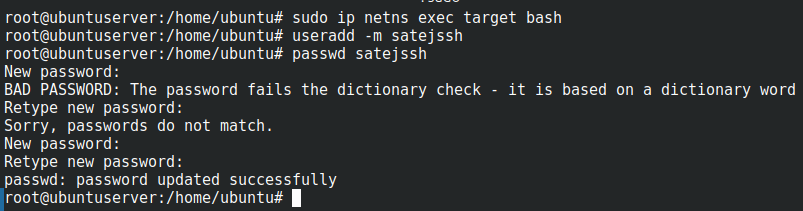
4.1.2 Configure and start SSH
Password authentication was enabled, and MaxAuthTries was reduced to 1 so each
attempt opens a fresh connection (which is what the behaviour-based rule counts).
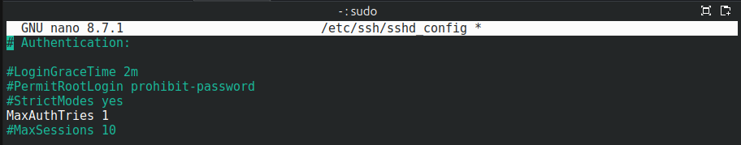
sshd_config — password auth on.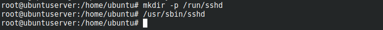
MaxAuthTries 1.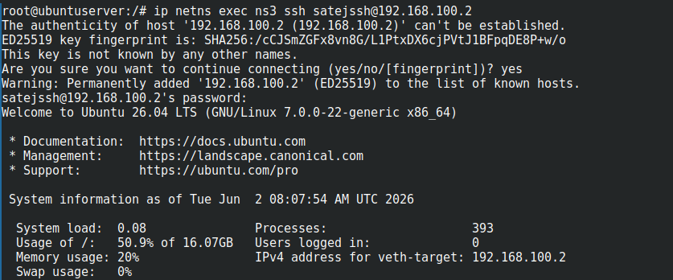
4.2 Suricata rule development
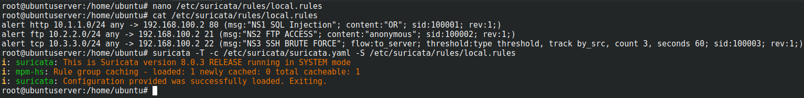
sid:100003 threshold rule.alert tcp 10.3.3.0/24 any -> 192.168.100.2 22 (
msg:"NS3 SSH BRUTE FORCE";
flags:S;
flow:to_server;
threshold:type threshold, track by_src, count 3, seconds 60;
sid:100003;
rev:1;
)
SSH encrypts authentication once the connection is up, so Suricata can't read usernames,
passwords, or failures directly. Detection therefore relies on connection behaviour:
flags:S matches only TCP SYN packets (new-connection attempts), and the
threshold fires after three from the same source IP within 60 seconds — enough to flag a
brute force while keeping false positives down.
4.3 Start Suricata on ids3
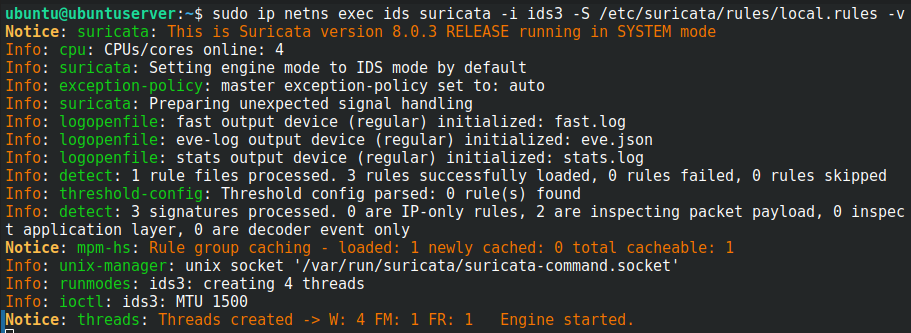
ids3.4.4 Detecting the brute force
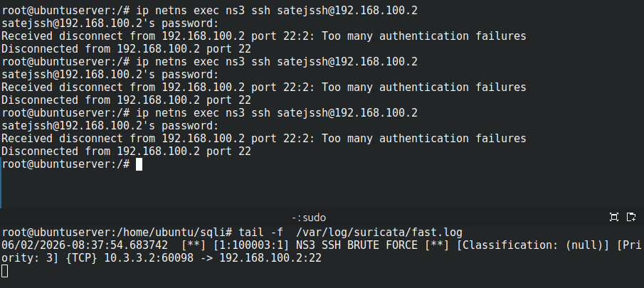
Source 10.3.3.2 (ns3) → 192.168.100.2:22, message NS3 SSH
BRUTE FORCE, rule 100003. Requiring multiple attempts before alerting is
what makes the signature representative of real-world detection.
4.5 NFQUEUE setup for blocking (IPS mode)
With detection working, Suricata was switched to IPS mode using Linux NFQUEUE so it can
drop matching traffic. An iptables rule in the ids namespace diverts SSH
packets on the forwarding path into the queue:
iptables -I FORWARD -p tcp --dport 22 -j NFQUEUE --queue-num 0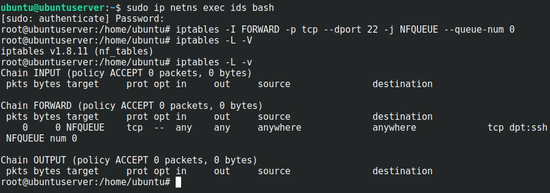
The companion rule uses the drop action rather than alert:
drop tcp 10.3.3.0/24 any -> 192.168.100.2 22 (
msg:"NS3 SSH BLOCKED";
flags:S;
flow:to_server;
threshold:type threshold, track by_src, count 3, seconds 60;
sid:200003;
rev:1;
)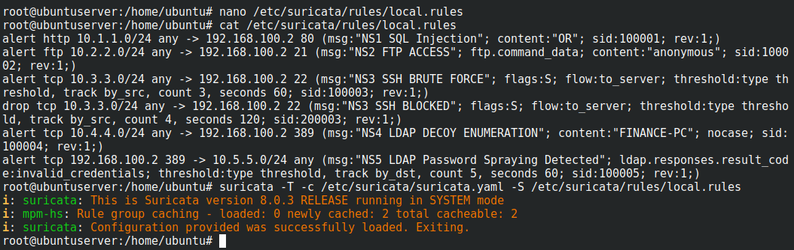
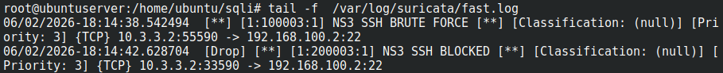
This threshold rule drops the packet that trips it but does not blacklist the host, so later
attempts may still get through — in practice roughly every fourth attempt is dropped. For
durable blocking, a small script could tail fast.log and dynamically insert an
iptables rule to ban the source IP for a set period.
Section 5 · LDAP Honeypot Enumeration (ns4)
5.1 LDAP environment setup
An OpenLDAP service was deployed in the target namespace. LDAP is a good choice here because attackers routinely query it during internal recon to enumerate users, computers, and other directory objects.
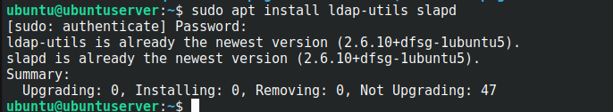
slapd
ss -tulpn | grep 389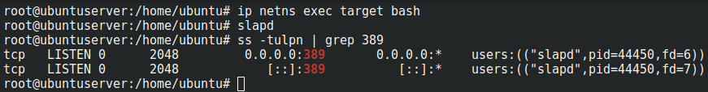
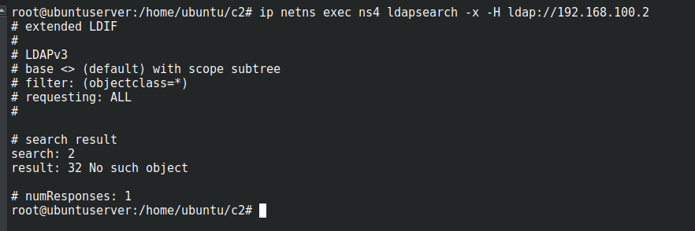
dc=nodomain tree was
kept.5.2 Create the honeypot object
A decoy computer object, FINANCE-PC, was added as bait:
dn: cn=FINANCE-PC,dc=nodomain
objectClass: top
objectClass: device
cn: FINANCE-PC
description: Decoy Workstationldapadd -x -D "cn=admin,dc=nodomain" -W -f decoy.ldif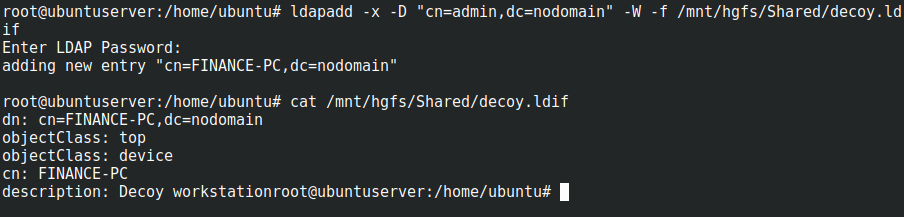
ip netns exec ns4 ldapsearch -x -H ldap://192.168.100.2 \
-b "dc=nodomain" "(cn=FINANCE-PC)"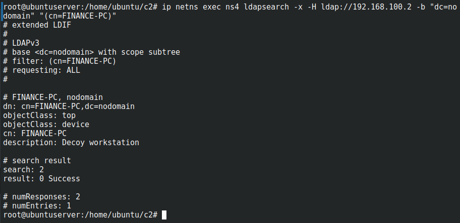
5.3 Rule development and deployment
alert tcp 10.4.4.0/24 any -> 192.168.100.2 389 (
msg:"NS4 LDAP DECOY ENUMERATION";
content:"FINANCE-PC";
nocase;
sid:100004;
rev:1;
)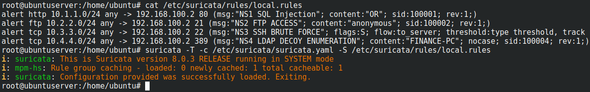
sid:100004 rule matches the honeypot name in any query.sudo ip netns exec ids suricata -i ids4 -S /etc/suricata/rules/local.rules -v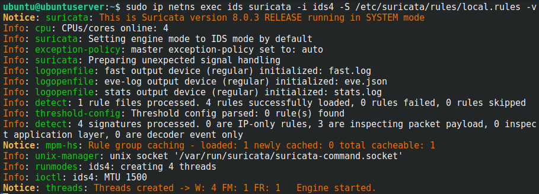
ids4.5.4 Detecting the enumeration
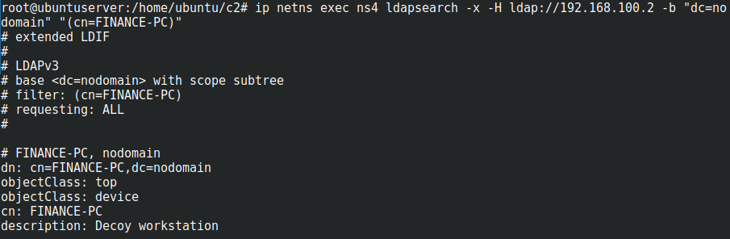
FINANCE-PC across ids4.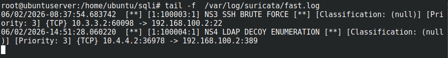
10.4.4.2 → 192.168.100.2:389, rule
100004.
Any touch of a decoy like FINANCE-PC is inherently high-signal: legitimate
users have no reason to query a planted reconnaissance trap, so a single hit is worth
escalating.
Section 6 · LDAP Password Spray (ns5)
6.1 Create LDAP user accounts
Several accounts — ordinary users and service accounts — were added so a single password could be sprayed across them. An abbreviated view of the LDIF:
dn: ou=People,dc=nodomain
objectClass: organizationalUnit
ou: People
dn: uid=jsmith,ou=People,dc=nodomain
objectClass: inetOrgPerson
cn: John Smith
sn: Smith
uid: jsmith
mail: john.smith@company.local
title: IT Administrator
userPassword: Summer2025!
# ...adoe, rpatel, mjones, finance.svc, backup.svc — all with userPassword: Summer2025!ldapadd -x -D "cn=admin,dc=nodomain" -W -f users.ldif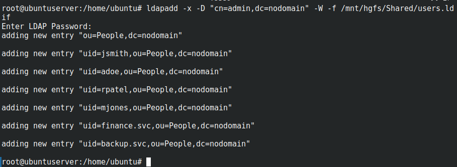
ou=People.6.2 Build the spray
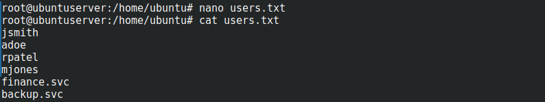
users.txt — the target list.while read user
do
ldapwhoami \
-x \
-D "uid=$user,ou=People,dc=nodomain" \
-w Winter2025! \
-H ldap://192.168.100.2
sleep 2
done < users.txt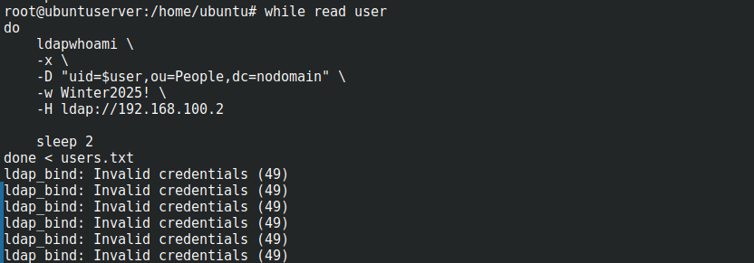
Winter2025!) tried against every account — the
opposite of a per-account brute force, and a common way to dodge lockout policies.6.3 Rule development and deployment
alert tcp 192.168.100.2 389 -> 10.5.5.0/24 any (
msg:"NS5 LDAP Password Spraying Detected";
ldap.responses.result_code:invalid_credentials;
threshold:type threshold, track by_dst, count 5, seconds 60;
sid:100005;
rev:1;
)sid:100005 rule watches the server's
invalid_credentials responses, not the requests.sudo ip netns exec ids suricata -i ids5 -S /etc/suricata/rules/local.rules -vids5.6.4 Detecting the spray
invalid_credentials responses land inside the
window.Keying on the server's result codes rather than individual login attempts is what lets the rule distinguish a spray — many accounts, same password — from the occasional genuine mistyped login, keeping false positives low.
Conclusion
The lab stood up a complete monitoring environment from nothing but Linux primitives: seven
namespaces modelling five isolated source networks, one inspection point, and a target host,
with every packet between source and target forced through the ids namespace
for centralised monitoring and enforcement.
Five attack scenarios were built and detected, each with a purpose-written, subnet-scoped rule:
- SQL injection against a vulnerable PHP app — HTTP content inspection.
- Anonymous FTP access — protocol-aware control-channel matching.
- SSH brute force — connection-behaviour thresholding, then inline blocking via NFQUEUE.
- LDAP honeypot enumeration — decoy-object keyword matching.
- LDAP password spray — server-side response-code thresholding.
Together they show the same sensor covering three detection styles — application-layer content, connection behaviour, and protocol response codes — and the step from passive IDS to active IPS, all on a single host.